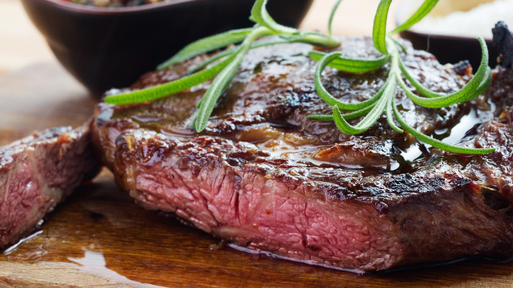

Gordon Ramsay's Perfect Steak Recipe
A steak is a meat generally sliced across the muscle fibers, potentially including a bone. It is normally grilled, though can also be pan-fried. It is often grilled in an attempt to replicate the flavor of steak cooked over the glowing coals of an open fire. And here's Chef Gordon Ramsay's guide to cook the perfect steak at home!
Prep Time: 20 mins | Cook Time: 5 mins | Total Time: 25 mins

Ingredients
- 200 grams Beef tenderloin
- 1/2 tablespoon Butter
- 1/2 tablespoon Minced garlic
- Olive Oil
- Salt
- Pepper
- Thyme
Instructions
- Put your pan on the stove and heat it on medium heat.
- Season the steak with salt and pepper and spread evenly.
- Put some olive oil onto the pan.
- Place your meat onto the pan.
- After 30 seconds, use a pair of tongs and turn the steak over. Turn the steak every 1 minute to ensure heat is distributed evenly.
- Add butter, garlic, and thyme.
- Tilt the pan and baste the steak.
- Rest the steak and enjoy!